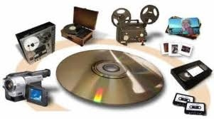

Mídias de armazenamento
 Visite a páginaUma mídia de armazenamento comum no mercado quanto dura ? Qual a certeza que podemos ter de que se armazenarmos um arquivo num dado formato no futuro poderemos recuperá-lo ? O título do artigo abaixo é auspicioso. Mas é isso mesmo, os pesquisadores em armazenamento de dados estão cada vez mais preocupados com dois aspectos dessa importantíssima questão das novas TIC: o meio e a forma de armazenamento e os softwares de gravação e recuperação.